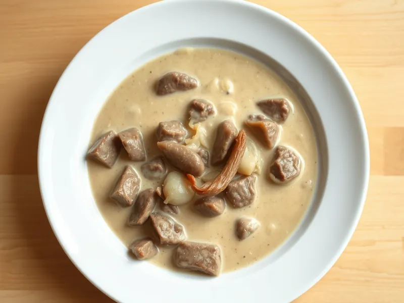

Говяжья печень в сметане с луком
Мягкие полоски печени, тушённые в сметанной подливке с луком
25 мин3 порц.465 ккал на порциюБ 30 · Ж 29 · У 21Русская кухня
Открыть в приложении: порции, таймеры, список покупок
Продукты на 3 порц.
- Говяжья печень450 г
- Лук репчатый2 шт
- Сметана 20%8 ст. л.
- Мука пшеничная1 ст. л.
- Растительное масло2 ст. л.
- Вода100 мл
- Соль0,7 ч. л.
- Перец чёрный молотый1 щеп.
Как готовить
- Срежьте с печени плёнку и протоки, нарежьте полосками толщиной 1 см. Лук нарежьте полукольцами, 6 минут.
- Обжарьте лук в половине масла на среднем огне 4 минуты до мягкости, переложите в тарелку.
- Обваляйте печень в муке. Добавьте оставшееся масло, разогрейте на сильном огне и обжарьте печень 3 минуты, переворачивая, пока полоски не станут серыми со всех сторон.
- Верните лук, добавьте сметану, воду, соль и перец, перемешайте.
- Накройте крышкой и тушите на слабом огне 7-8 минут. Готовая печень при надрезе однородная, без розового сока.
Совет. Солите печень только в соусе, а не до жарки: соль заранее вытягивает сок и делает её жёсткой.